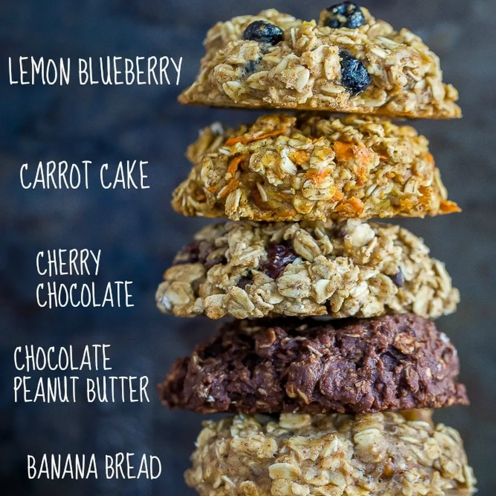

Ingrédients pour Carrot Cake – Healthy Make Ahead Breakfast Cookies
- 2 1/2 tasses de flocons d'avoine (certifiés sans gluten si nécessaire)
- 3/4 tasse de farine (sans gluten ou tout usage)
- 1/4 tasse de sucre de coco
- 1 c. à café de levure chimique
- 1 1/2 c. à café de cannelle moulue
- 1/4 c. à café de muscade moulue
- 1/4 c. à café de clous de girofle moulus
- 1/4 c. à café de gingembre moulu
- 1/8 c. à café de sel
- 1/2 tasse de lait végétal (par exemple, lait d'amande)
- 1/4 tasse de sirop d'érable
- 1 œuf de lin (1 c. à soupe de graines de lin moulues mélangées avec 2 1/2 c. à soupe d'eau, laisser reposer quelques minutes)
- 1 c. à café d'extrait de vanille
- 1 tasse de carotte râpée
